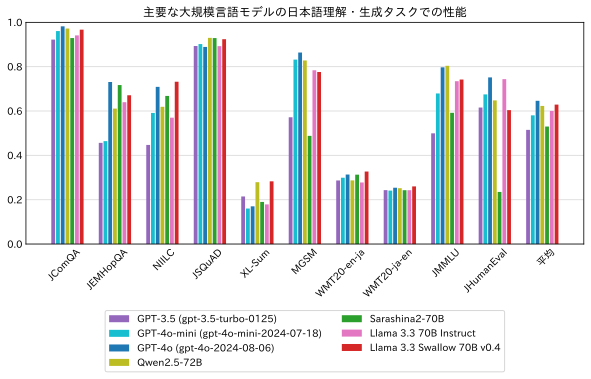
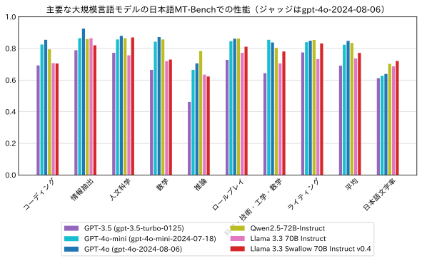

2025年3月10日
Llama 3.3 Swallow
Llama 3.3 SwallowはLlama 3.3をベースに日本語の能力を強化した大規模言語モデル (70B) です。モデルのパラメータ（重み）がHuggingFace上で公開されています。Llama 3.3ライセンスに従い、なおかつGemma利用規約の利用制限に抵触しない範囲で、研究や商業目的などで利用できます。Llama 3.3 Swallowは米Meta社のLlama 3.3をベースに、東京科学大学情報理工学院の岡崎研究室と横田研究室、国立研究開発法人産業技術総合研究所の研究チームで開発されました。Built with Llama.

Llama 3.3ベースの最先端
公開モデル
性能
Swallowプロジェクトでは、汎用性が高く日本語に強い大規模言語モデルを目指して研究開発を進めています。 そこで、モデルの公開毎に評価タスクを選ぶのではなく、予め定めたベンチマークでモデルの評価を行っています。 具体的には、常識的な知識を問う質問応答タスク、言語生成能力を測定する自動要約や機械翻訳、一般教養を問う試験問題、論理的思考力を反映する数学やコード生成のタスクを取り入れ、日本語理解・生成タスクとして10件のデータセット、英語理解・生成タスクとして10件のデータセットで評価実験を実施しています（今回新たにMATHベンチマークを追加しました）。 また、日本語の対話能力を測定するため、GPT-4をジャッジとした日本語MT-Benchの評価を行っています（ジャッジはgpt-4o-2024-08-06）。
さらに、高い言語理解・生成・対話能力を発揮する大規模言語モデルの構築方法を探求するため、研究チームで試作した大規模言語モデルの評価実験に加え、他の組織で開発された大規模言語モデルの評価実験も行っています。 その実験回数は2024年度だけで600回を超えています。 Swallowチームで実施した評価結果は、Swallow LLM Leaderboardとして公開しています。
70Bベースモデル
さて、オープンなLLMであるLlama 3.3 Swallow 70B v0.4はどのくらいの性能なのでしょうか。 今回は、OpenAIのLLMの中でよく利用されているGPT-4o (gpt-4o-2024-08-06)、GPT-4o-mini (gpt-4o-mini-2024-07-18)、GPT-3.5 (gpt-3.5-turbo-0125)、オープンなLLMの中で高い日本語性能を示すQwen2.5-72B、フルスクラッチで開発されている国産モデルの中で高い性能を収めているSarashina2-70B、継続事前学習元のLlama 3.3 70B Instructの性能を比較しました。

Llama 3.3 Swallow 70B v0.4の日本語理解・生成タスクの平均スコアは0.629となり、今回比較したモデルの中ではGPT-4oの0.646に次ぐ2位の成績を収めました。 3位のQwen2.5-72Bの平均スコアは0.623（0.6ポイント差）ですので、Llama 3.3 Swallow 70B v0.4はQwen2.5-72Bとほぼ同等で、GPT-4oに迫る性能と言えます。
継続事前学習前のLlama 3.3 70B Instructの0.601と比較すると、日本語理解・生成タスクの平均スコアは2.8ポイントの上昇になりました。 日本語理解・生成の各タスクのスコアを細かく調べると、MGSMとJHumanEvalを除く8タスクで改善となりました。 特に、NIILCは0.570から0.732（16.2ポイントの上昇）、XL-Sumは0.179から0.283（10.4ポイントの上昇）、WMT20 (en-ja) は0.278から0.327（4.9ポイントの上昇）の改善が得られました。 日本に関する百科事典的な知識や日本語の生成能力が必要となるタスクで効果が得られていますので、継続事前学習でLlama 3.3 70B Instructの日本語能力が鍛えられたと言えます。
MGSM（算術推論）のスコア低下は僅か（0.8ポイント）に留まりましたが、JHumanEval（コード生成）は14.0ポイントのスコア低下となりました。 今回の継続事前学習では、The Stack v2の中から品質の高い事例をフィルタリングしてコード生成の訓練データとして用いましたが、この方法ではJHumanEvalのスコアが約20ポイント以上大幅に下落しました。 そこで、訓練データのソースコードをLLMで整形（リファクタリング）することで、JHumanEvalのスコア低下を抑えることができました。 このように、継続事前学習は元のモデルの性能が高ければよい訳ではなく、元のモデルの能力を維持するために高品質な訓練データが必要です。
なお、今回公開したLlama 3.3 Swallow 70B v0.4は、NIILC（日本語の質問応答）、XL-Sum（自動要約）、WMT20（日英・英日の両方向の機械翻訳）において、比較したモデルの中で最高性能を達成しています。 Llama 3.3 Swallow 70B v0.4とGPT-4oの間には、まだ体感的な性能差を感じるところがありますが、これらの能力に重点を置くのであれば、Llama 3.3 Swallow 70B v0.4はGPT-4oの代替として検討できるレベルになりました。
また今回、OpenAI o1やDeepSeek-R1など、最近話題の「思考の深い」モデルの評価や性能比較にも挑戦しましたが、評価結果から除外することにしました。 OpenAI o1はAPIの利用料金が高く、予算の制約が多い年度末に評価を実施するのは困難であったため、評価を断念しました。 DeepSeek-R1からLlamaやQwenに蒸留したモデルの評価も進めましたが、Swallowで採用している評価方法ではスコアが低めに出ることが判明し、その能力に関する誤解を避けるため、評価結果を公表しないことにしました。 具体的には、DeepSeek-R1系のモデルはzero-shot推論で利用することが推奨されていますが、Swallowの評価で採用しているfew-shot推論を行うと、スコアが30ポイントも下落するタスクがありました。 公平性の観点から、モデルに応じて評価方法を変えることは避けたいので、DeepSeek-R1系のモデルの評価については、今後の課題にしたいと思います。
70B指示チューニングモデル
続いて、指示チューニングモデルであるLlama 3.3 Swallow 70B Instruct v0.4の対話性能を日本語MT-Benchで測定しました（ジャッジはgpt-4o-2024-08-06）。 比較対象として、GPT-4o (gpt-4o-2024-08-06)、GPT-4o-mini (gpt-4o-mini-2024-07-18)、GPT-3.5 (gpt-3.5-turbo-0125)、Qwen2.5-72B-Instruct、継続事前学習元のLlama 3.3 70B Instructの性能を用いました（Sarashina2-70Bは指示チューニングモデルが無いため除外しました）。

Llama 3.3 Swallow 70B Instruct v0.4の日本語MT-Benchの平均スコアは0.772で、GPT-4oの0.848やQwen2.5-72B-Instructの0.835には及ばないようです（これらのスコアを10倍したものがよく用いられる10点満点のMT-Benchスコアとなります）。 人文科学やライティングなど、知識や日本語に関するタスクは得意のようですが、コーディングや数学、推論などで差がついており、改善の余地がありそうです。 なお、Llama 3.3 Swallow 70B Instruct v0.4の指示チューニングデータはGemma 2 27B ITの模倣学習となっており、その日本語MT-Benchの平均スコアは0.768ですので、模倣元のLLMの対話能力を十分に受け継いでいると考えられます。
ところで、海外製のLLMの中には、日本語での問いかけに対して英語で応答をしてしまう場合があります。 応答をジャッジするGPT-4oには「日本語ではない応答は減点せよ」との指示を入れていますが、その指示を無視して英語での応答に高い点数を付けてしまうことがあります。 そこで、Swallowの開発チームでは日本語MT-Benchで評価を行うときに、応答に含まれる日本語の文字の割合を調べています。 日本語MT-Benchにはコーディングなどのタスクもありますので、応答の全てが日本語の文字で書かれるべきではなく、日本語文字の割合は70%程度が妥当と考えています。 今回の評価では、GPT系列のモデルは日本語文字の割合が62%前後に留まったのに対し、Llama 3.3 Swallow 70B Instruct v0.4は72%くらいまで上昇しています。 このことから、Llama 3.3 Swallow 70B Instruct v0.4は応答を日本語で返すように、適切にチューニングされたと考えられます。
構築方法
Llama 3.3 Swallowは以下の手順で構築されています。
- Llama 3.3 Swallow ベースモデル: Llama 3.3 70B Instructに対して継続事前学習 (Fujii et al., 2024) を行う（語彙拡張は無し）
- Llama 3.3 Swallow 指示チューニングモデル: Llama 3.3 Swallow ベースモデルに教師ありファインチューニング（SFT）を行う
継続事前学習で用いたコーパスは以下の通りです。
- Cosmopedia
- Dclm-baseline-1.0 (Li et al., 2024)
- FineMath-4+ (Allal et al., 2025)
- English Wikipedia
- Japanese Wikipedia
- Laboro ParaCorpus
- Swallow Corpus Version 2から厳選した教育的価値の高いテキスト
- Swallow Education ClassifierのWikipediaベース分類器によるトップ10%
- Swallow Education ClassifierのLLMベース分類器によるトップ10%
- 教育的価値の高いテキストから合成した QA 形式の日本語合成テキスト
- The Stack v2 (Lozhkov et al., 2024) に品質フィルタおよびLLMによる整形を適用したSwallow Code v0.3
Swallow Corpus Version 2
Llama 3.1 Swallowの継続事前学習では、Common Crawlから配布されているアーカイブ全量（2013年から2023年に収集された94スナップショット、約2547億ページ）から日本語のテキストを独自に抽出・精錬した日本語ウェブコーパス（Swallow Corpus Version 2）が用いられています (Okazaki et al., 2024)。 Swallow Corpus Version 2では、Common Crawlから約2547億ページをダウンロードし、その中から日本語と思われる約83億ページ（約12兆文字の日本語テキスト）を抽出しました（Common Crawl全体に占める日本語ウェブページの割合は3.2%でした）。 重複除去後の日本語ウェブページの規模は、19億ページ（3.2兆文字）でした。
教育的価値の高いテキストの厳選
Llama 3.1 Swallowでの成功を継承して、Swallow Corpus Version 2から教育的なWeb文書を厳選し、学習データに用いました (服部ら, 2025)。 今回は、Swallow Education ClassifierのWikipediaベース分類器（日本語Wikipediaに基づいて教育的価値を判断）と、LLMベース分類器（Llama 3.1による自動アノテーションにより教育的価値を判断）のいずれかにおいて、教育的価値がトップ10%に認定された文書を学習に用いました。 それ以外の日本語テキストとして、日本語WikipediaやLaboro ParaCorpusを用いました。
QA 形式の日本語合成テキスト
Llama 3.3 Swallow 70B v0.4では、教育的価値の高いテキストの学習効果をさらに高めるため、Gemma 2 27B ITを用いてQA形式に言い換えた合成テキスト（以下、QA形式合成テキスト）を構築し、継続事前学習に用いました。 Llama 3.1 Swallow 70B v0.1と比較すると、Llama 3.3 Swallow 70B v0.4はNIILC（0.678 → 0.732）やJMMLU（0.709 → 0.742）など、知識や教養を必要とするタスクのスコアが改善しています。 コーパスの配合の変更、継続事前学習前のLLMの差、学習トークン数の違いなどもあるため、厳密な比較はできませんが、後述するアブレーション実験の結果をふまえて、QA形式合成テキストは性能改善に貢献していると考えています。
アブレーション実験
継続事前学習に先立ち、QA形式合成テキストの有効性を確認するアブレーション実験を実施しました。 具体的には 1) Swallow Corpus Version 2、2) 教育的価値の高いテキストのうち、LLMベース分類器のトップ10%、3) 教育的価値の高いテキストをシードとして生成したQA形式合成テキスト、4) 2と3の併用、の4種類のテキストそれぞれを用いて継続事前学習を行い、性能を比較しました。
継続事前学習のベースモデルは、Llama 3 8Bを用いました（Llama 3.1ではなくLlama 3を用いたのは、過去の実験結果を再利用するため）。学習トークン数は500億（50B）とし、その内訳は実験対象のテキスト（48.31Bトークン）および日本語Wikipedia（1.69Bトークン）の混合としました。
QA形式合成テキストを用いた場合は質問応答（JEMHopQA, NIILC）、教養科目（JMMLU, pfgen-bench (今城ら, 2025)）、機械読解（JSQuAD）、算術推論（MGSM）といった幅広いタスクでスコアが大幅に改善し、日本語の知識や推論に関する能力の向上に寄与しました。 また、QA形式合成テキストと、合成時のシードである教育的価値の高いテキストを併用することで、常識的知識の質問応答（JComQA）の改善および機械翻訳（WMT20）の性能低下を回避し、高い効果が得られることも分かりました。
| 実験パターン | JComQA | JEMHopQA | NIILC | JSQuAD | XL-Sum | MGSM | WMT-20 (en-ja) | WMT-20 (ja-en) | JMMLU | JHumanEval | pfgen-bench |
|---|---|---|---|---|---|---|---|---|---|---|---|
| Llama 3 8B（ベースLLM） | 83.6 | 44.5 | 40.0 | 88.8 | 17.6 | 33.2 | 22.0 | 20.9 | 45.6 | 33.1 | 40.3 |
| 1) Swallow Corpus Version 2 | 87.5 | 46.3 | 56.3 | 88.8 | 21.2 | 32.8 | 27.0 | 20.1 | 46.9 | 23.9 | 60.9 |
| 2) LLM分類器トップ10% | 88.6 | 49.5 | 59.9 | 89.8 | 19.3 | 33.6 | 28.3 | 20.9 | 50.2 | 24.8 | 66.5 |
| 3) QA形式合成テキスト | 86.9 | 52.5 | 63.5 | 90.6 | 18.8 | 40.4 | 26.3 | 19.0 | 55.3 | 27.6 | 70.8 |
| 4) LLM分類器トップ10% + QA形式合成テキスト | 92.3 | 53.8 | 65.3 | 91.0 | 19.1 | 41.6 | 28.5 | 21.0 | 55.9 | 25.4 | 71.1 |
合成テキストに含まれる「繰り返し」の除去
8Bモデルを用いたアブレーション実験の際は、合成テキストを用いた継続事前学習は特に問題なく完了しました。しかし、70Bモデルの継続事前学習に用いたところ、ロス・スパイクが頻発して学習が不安定になりました。 そこで合成テキストを再度精査したところ、 \\_\\_\\_... のような同一文字列の「繰り返し」を含む文書がごくわずかに（10万件につき数件程度）存在することが判明しました。 これらの文書をn-gramに基づくルールで除去すると、ロス・スパイクは発生しなくなりました。 この事実だけで繰り返しがロス・スパイクの原因と断定はできませんが、先行研究 (OLMo Team, 2025) では繰り返しが一因となり得ると指摘されています。 したがって、合成テキストを構築する際は、繰り返しを含む文書の除去など、品質確認と修正を行うのがよいという教訓を得ました。ウェブから収集したテキストに品質フィルタを適用するのと同様に、LLMが生成したテキストも完全ではないと想定すべきでしょう。
英語・数学のテキストおよびソースコード
Llama 3 SwallowおよびLlama 3.1 Swallowで確認した有効性を踏襲して、高品質な英語ウェブテキストであるDclm-baseline-1.0、LLMを用いて合成された教科書的テキストであるCosmopediaを用いました。また演繹や推論に焦点を当ててCommonCrawlから抽出した数学テキストであるFineMath (Allal et al., 2025) の4+サブセットを追加しました。 ソースコードについては、まずLlama 3.1 Swallow v0.2に倣い、The Stack v2 (bigcode/the-stack-v2-train-smol-ids) のPythonサブセットに品質フィルタを適用して、構文エラーを含む、またはPylintの採点が7点未満のコードを削除しました。これにより得られたコーパスをtokyotech-llm/swallow-code-v0.1として配布しています。次に、人間がソフトウェアの品質（可読性）を向上させる手法に倣って、Google Python Style Guideやコーディングのベストプラクティスに従うように、Llama 3.3 70B Instructを用いて整形（リファクタリング）を行いました。Llama 3.1 8Bを用いた実験では、整形したコードを学習することでJHumanEvalやHumanEvalのスコアが5から9ポイント改善することを確認しています。
合成データによる対話能力の向上
大規模言語モデルの対話能力を向上させる鍵は、多様かつ複雑な指示、および有用かつ流暢な応答からなる学習データで指示チューニングをすることにあります。理想的には、大規模言語モデルに寄せられる問いかけのデータを収集し、適切な応答を人手で付与したデータを構築することが望ましいですが、これには膨大な時間と労力が必要です。研究チームは、短期間かつ安価に学習データを構築するため、高い対話能力を有する既存の大規模言語モデルの応答を模倣するアプローチを採用しました (Maら, 2025)。具体的には、人間と大規模言語モデルの対話履歴を収録したLMSYS-Chat-1Mデータセットの指示文を邦訳し、オープンなモデルの中でトップクラスの対話能力を有するもの（Llama-3.1-405B-Instructもしくはgemma-2-27b-it）を用いて応答文を自動生成しました。また、Llama 3.1構築の方法論に倣い、複数の応答文を生成してからモデルに選好を自動採点させ、最良の応答文を選択するという工夫を取り入れました。さらに、重複する指示文や機械的な指示文、無用な繰り返しを含む応答を検出・削除することで、データの品質を向上させました。
Llama 3.3 Swallow v0.4の指示チューニングデータ（以下、SFTデータ）は、日本語対話向けSFTデータおよびコード生成タスク向けSFTデータです。英語対話向けのSFTデータは使用していません。 日本語対話向けSFTデータはLlama 3.1 Swallow v0.3と同一で、具体的には以下の通りです。
- Gemma-2-LMSYS-Chat-1M-Synth: lmsys-chat-1m (Zhang et al., 2024) から合成した日本語マルチターン指示・応答データセット。
- 1ターン目の人間の指示文をDeepL（機械翻訳）で邦訳し、邦訳した指示文に対してGemma 2 27B ITでアシスタントの応答文を生成しました。その後、Gemma 2 27B ITの自動採点によって棄却サンプリング (n=6) を行いました。
- 2ターン目の指示文と応答文も同じくGemma 2 27B ITを用いて生成しました。さらに、2ターン目の応答文をGemma 2 27B ITを用いて自動採点し、10点満点中9点未満の応答文とその指示文を削除しました。
- なお、個人識別情報 (PII) を含む対話、テンプレートベースの指示文、および重複する指示文は削除しました。
- Swallow-Magpie-Ultra-v0.1: Llama 3.1 Swallow v0.1およびv0.2で用いた
filtered-magpie-ultra-jaデータセットと同一です。MAGPIE (Xu et al., 2025) の方法論とLlama-3.1-405B-Instructを用いて構築された magpie-ultra-v0.1データセットが出典で、品質が”average”以上だと採点された指示・応答文ペアをGemma 2 27B ITを用いて邦訳しました。 - Swallow-Gemma-Magpie-v0.1: Llama 3.1 Swallow v0.1およびv0.2で用いた
gemma-magpieに対してGemma 2 27B ITの自動採点を行い、7点以下の応答文およびその指示文を削除しました。
SFTによるコーディング能力の向上
Llama 3.3 Swallow 70B Instruct v0.4では、コード生成タスク向けSFTデータの追加および2段階のSFTを採用することで、教師ありファインチューニングによるコーディング能力の向上に取り組みました。
コード生成タスク向けSFTデータは、継続事前学習に使用したソースコードコーパスSwallow Code v0.3を、Llama 3.3 70B Instructを用いて指示・応答文ペアの形式に変換したものです。
8Bモデルによる実験では、コード生成タスク向けと日本語対話向けのSFTデータを同時に学習するとコード生成タスク向けSFTデータの効果が発揮されなかったことから、2段階のSFTを採用しました。 具体的には、第1段階ではコード生成タスク向けSFTデータを学習し、第2段階ではコード生成タスク向けSFTデータの一部と、日本語対話向けのSFTデータを混合して学習しました。 この結果、ベースモデルと比べて指示チューニングモデルのコード生成タスクは、HumanEvalが0.709から0.750に、JHumanEvalが0.604から0.700に、それぞれ5から10ポイント改善しました。
Amazon SageMaker HyperPodによる分散並列学習
ABCI 3.0の稼働時期が2024年10月時点では不透明であったため、今回の継続事前学習では、Amazone Web Services (AWS) のSageMaker HyperPod (H100 x 32ノード) を利用して学習を行いました。SageMaker HyperPod上では、Elastic Fabric Adapter (EFA) と呼ばれるネットワーク・インターフェースを利用しましたが、このEFAを利用するとPyTorchの管理外のメモリ利用が（東京科学大学のTSUBAME 4.0などのInfiniBand環境下と比べて）増加することを確認しました。そのため、想定していた設定で分散学習を行うと、メモリ不足が生じてしまい、学習設定を見直す必要がありました。
また、今回の学習では学習速度向上のために、従来より導入していたデータ並列 (DP; Data Parallel) の通信と学習の計算のオーバーラップに加え、テンソル並列 (TP; Tensor Parallel) の通信についても学習の計算とオーバーラップさせました。これにより、通信が終わるまで学習の計算を待機しなければならない時間を大幅に削減し、学習速度を向上させることに成功しました。
分散ストレージにはAmazon FSx for Lustreを利用し、ストレージが学習のボトルネックになることを防ぎました。さらに、モデルのチェックポイントの保存に要する時間を削減するために、PyTorchのDistributed Checkpoint (DCP) と非同期保存機能 (Asynchronous Saving with DCP) を利用しました。これにより、Llama 3.1 Swallow 70B v0.1の学習と比べて、チェックポイント保存時間を10分の1以下に抑えられました。こちらも、学習速度の向上に貢献しています。
学習環境の詳細については、ブログ記事をご参照ください。また、今回のAWSの利用に際し、AWSの柳生様、佐々木様、渡辺様、宮本様、井阪様には様々なサポートをいただきました。この場をお借りして感謝申し上げます。
参考文献
- Loubna Ben Allal, Anton Lozhkov, Elie Bakouch, Gabriel Martín Blázquez, Guilherme Penedo, Lewis Tunstall, Andrés Marafioti, Hynek Kydlíček, Agustín Piqueres Lajarín, Vaibhav Srivastav, Joshua Lochner, Caleb Fahlgren, Xuan-Son Nguyen, Clémentine Fourrier, Ben Burtenshaw, Hugo Larcher, Haojun Zhao, Cyril Zakka, Mathieu Morlon, Colin Raffel, Leandro von Werra and Thomas Wolf. 2025. SmolLM2: When Smol Goes Big — Data-Centric Training of a Small Language Model. arXiv:2502.02737.
- Kazuki Fujii, Taishi Nakamura, Mengsay Loem, Hiroki Iida, Masanari Ohi, Kakeru Hattori, Hirai Shota, Sakae Mizuki, Rio Yokota, and Naoaki Okazaki. Continual Pre-Training for Cross-Lingual LLM Adaptation: Enhancing Japanese Language Capabilities. In Proceedings of the First Conference on Language Modeling (COLM), October 2024.
- Jeffrey Li, Alex Fang, Georgios Smyrnis, Maor Ivgi, Matt Jordan, Samir Yitzhak Gadre, Hritik Bansal, Etash Kumar Guha, Sedrick Keh, Kushal Arora, Saurabh Garg, Rui Xin, Niklas Muennighoff, Reinhard Heckel, Jean Mercat, Mayee Chen, Suchin Gururangan, Mitchell Wortsman, Alon Albalak, Yonatan Bitton, Marianna Nezhurina, Amro Abbas, Cheng-Yu Hsieh, Dhruba Ghosh, Josh Gardner, Maciej Kilian, Hanlin Zhang, Rulin Shao, Sarah M. Pratt, Sunny Sanyal, Gabriel Ilharco, Giannis Daras, Kalyani Marathe, Aaron Gokaslan, Jieyu Zhang, Khyathi Raghavi Chandu, Thao Nguyen, Igor Vasiljevic, Sham M. Kakade, Shuran Song, Sujay Sanghavi, Fartash Faghri, Sewoong Oh, Luke Zettlemoyer, Kyle Lo, Alaaeldin El-Nouby, Hadi Pouransari, Alexander Toshev, Stephanie Wang, Dirk Groeneveld, Luca Soldaini, Pang Wei Koh, Jenia Jitsev, Thomas Kollar, Alexandros G. Dimakis, Yair Carmon, Achal Dave, Ludwig Schmidt and Vaishaal Shankar. 2024. DataComp-LM: In search of the next generation of training sets for language models. arXiv:2406.11794.
- Naoaki Okazaki, Kakeru Hattori, Hirai Shota, Hiroki Iida, Masanari Ohi, Kazuki Fujii, Taishi Nakamura, Mengsay Loem, Rio Yokota, and Sakae Mizuki. Building a Large Japanese Web Corpus for Large Language Models. In Proceedings of the First Conference on Language Modeling (COLM), October 2024.
- Team OLMo, Pete Walsh, Luca Soldaini, Dirk Groeneveld, Kyle Lo, Shane Arora, Akshita Bhagia, Yuling Gu, Shengyi Huang, Matt Jordan, Nathan Lambert, Dustin Schwenk, Oyvind Tafjord, Taira Anderson, David Atkinson, Faeze Brahman, Christopher Clark, Pradeep Dasigi, Nouha Dziri, Michal Guerquin, Hamish Ivison, Pang Wei Koh, Jiacheng Liu, Saumya Malik, William Merrill, Lester James V. Miranda, Jacob Morrison, Tyler Murray, Crystal Nam, Valentina Pyatkin, Aman Rangapur, Michael Schmitz, Sam Skjonsberg, David Wadden, Christopher Wilhelm, Michael Wilson, Luke Zettlemoyer, Ali Farhadi, Noah A. Smith and Hannaneh Hajishirzi. 2025. 2 OLMo 2 Furious. arXiv:2501.00656.
- 今城 健太郎, 平野 正徳, 鈴木 脩司, 三上 裕明. pfgen-bench: 日本語事前学習モデルのための文章生成性能評価ベンチマーク. 言語処理学会第31回年次大会 (NLP2025), A2-3, pp. 443–447, 2025年3月.
- 服部 翔, 岡崎 直観, 水木 栄, 藤井 一喜, 中村 泰士, 大井 聖也, 塩谷 泰平, 齋藤 幸史郎, Youmi Ma, 前田 航希, 岡本 拓己, 石田 茂樹, 横田 理央, 高村 大也. Swallowコーパスv2: 教育的な日本語ウェブコーパスの構築. 言語処理学会第31回年次大会 (NLP2025), C1-5, pp. 94–99, 2025年3月.
- Youmi Ma, 水木 栄, 藤井 一喜, 中村 泰士, 大井 聖也, 島田 比奈理, 塩谷 泰平, 齋藤 幸史郎, 前田 航希, 服部 翔, 岡本 拓己, 石田 茂樹, 横田 理央, 高村 大也, 岡崎 直観. 模倣学習による大規模言語モデルの指示チューニング. 言語処理学会第31回年次大会 (NLP2025), Q8-21, pp. 3446–3451, 2025年3月.
付記
大規模言語モデルSwallowの研究開発は、産総研政策予算プロジェクト「フィジカル領域の生成AI基盤モデルに関する研究開発」、国立研究開発法人新エネルギー・産業技術総合開発機構（NEDO）の「次世代人工知能・ロボットの中核となるインテグレート技術開発」プロジェクト（JPNP18002)の「熟練者観点に基づき、設計リスク評価業務における判断支援を行う人工知能適用技術の開発」、文部科学省の補助事業「生成AIモデルの透明性・信頼性の確保に向けた研究開発拠点形成」、その他の支援によって実施されました。